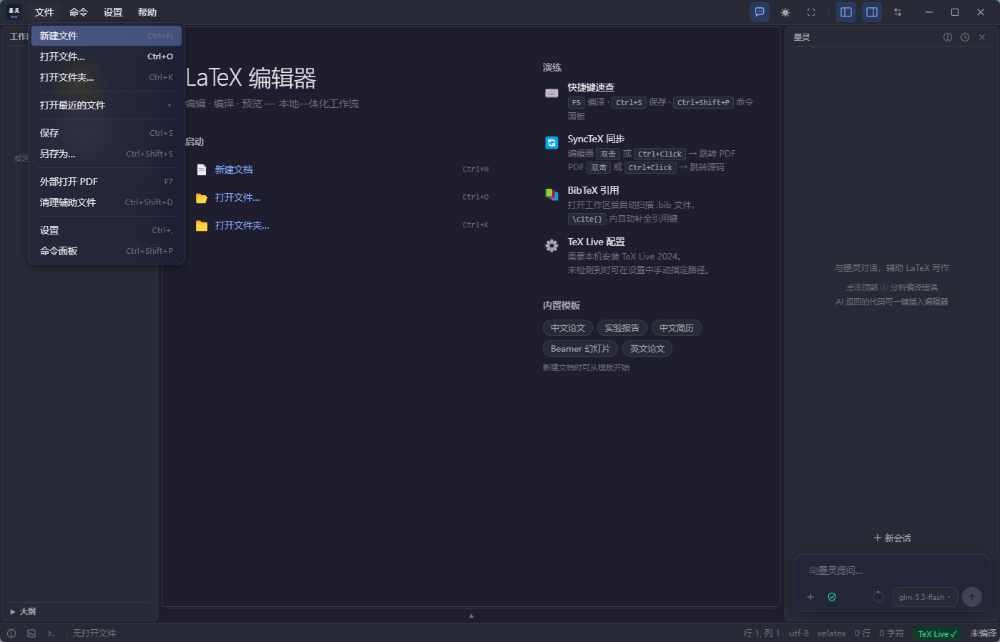
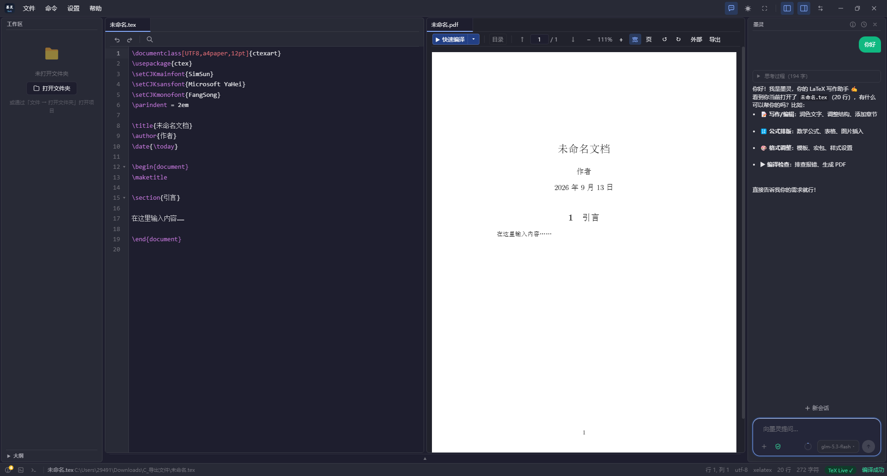

集编辑、编译、预览、AI 助手于一体的桌面应用。数据完全本地，无需联网，开箱即用。

主界面
编译预览XeLaTeX 深度集成，TeX Live 自动检测。
PDF.js 渲染，垂直滚动浏览。
CodeMirror 6 驱动，LaTeX 优化。
专为中文论文调优。
面板化布局，自由定制。
文件树、大纲、多标签。
不只是聊天。墨灵能直接读取、修改你的项目文件，编译验证，实时反馈。
ctex 中文模板开箱即用，SyncTeX 源码与 PDF 快速定位，AI 润色段落、检查引用。
IEEE、Elsevier 等期刊模板。BibTeX 自动管理参考文献，编译日志精准定位错误。
Beamer 幻灯片模板内置，公式智能补全。AI 帮你把讲义转换为 Beamer 格式。
中文简历模板即开即用，一键编译出 PDF，比 Word 更精确的排版控制。
| 特性 | 墨灵TeX | Overleaf | TeXstudio |
|---|---|---|---|
| 完全本地运行 | ● | ○ | ● |
| 无需注册/联网 | ● | ○ | ● |
| AI 助手 | ● | ◐ 付费 | ○ |
| AI 读写项目文件 | ● | ○ | ○ |
| 中文开箱优化 | ● | ◐ 需配置 | ◐ |
| 免费开源 | ● MIT | ○ | ● |